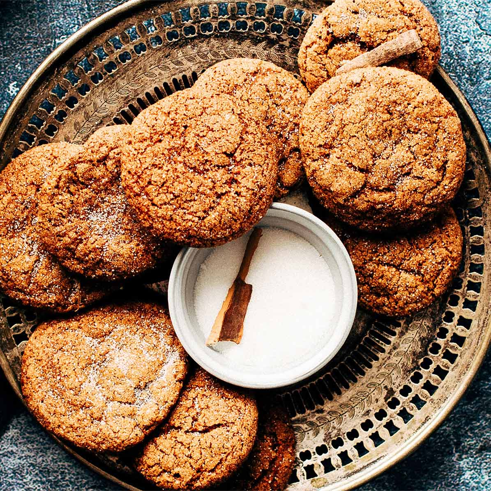

Ginger Sparkle Cookies
There’s nothing like the aroma of ginger cookies baking. Well, except, eating them when they are warm and fresh out of the oven.
Ingredients
- 2 cups + 2 tbsp all-purpose flour
- 2 tsp baking soda
- 2 tsp ground ginger
- 1 tsp ground cinnamon
- ½ tsp ground allspice
- ½ tsp salt
- ¼ tsp each ground cloves and nutmeg
- Pinch cayenne pepper
- ¾ cup unsalted butter, at room temperature
- 1 cup packed brown sugar
- 1 egg
- ¼ cup molasses
- 1 tsp vanilla extract
- Coarse decorating or granulated sugar, for rolling
Preparation
Whisk together flour, baking soda, ginger, cinnamon, allspice, salt, cloves, nutmeg and cayenne pepper; set aside.
Beat butter and brown sugar with electric beaters until light and fluffy, scraping down sides of bowl as needed. Beat in egg until combined. Stir in molasses and vanilla until blended. Stir in dry ingredients; beat just until blended. Cover and let stand in refrigerator for at least 1 hour and up to 2 days. (This will make them easy to roll and shape.)
Preheat oven to 375˚ F. Using a tablespoon to measure, roll dough into roughly 1-inch balls. Roll the balls in sugar to coat and place on parchment paper-lined baking sheets, spacing about 2-inches apart. Press dough with tines of fork in a crisscross pattern to flatten slightly. Top with a pinch more sugar. (If the dough is too soft to work with, pop in freezer for a few minutes to firm up.)
Bake in middle of the oven, one tray at a time, until the cookies are set around the edges but still a little soft in the centre, about 9 to 11 minutes. Transfer to a wire rack to cool completely. Store in an airtight container for up to 3 days, or freeze for up to 1 month.
Recipe notes:
For fully-loaded ginger cookies, add chopped pecans, white chocolate chunks and chopped crystallized ginger to the dough.
Coarse sugar for cookies, also called decorative or sanding sugar can be found at bulk food stores. It really does make the ginger cookies sparkle but granulated sugar is just as pretty and delicious.
Servings: Makes about 30 cookies